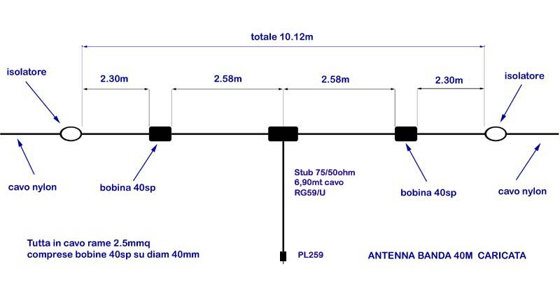
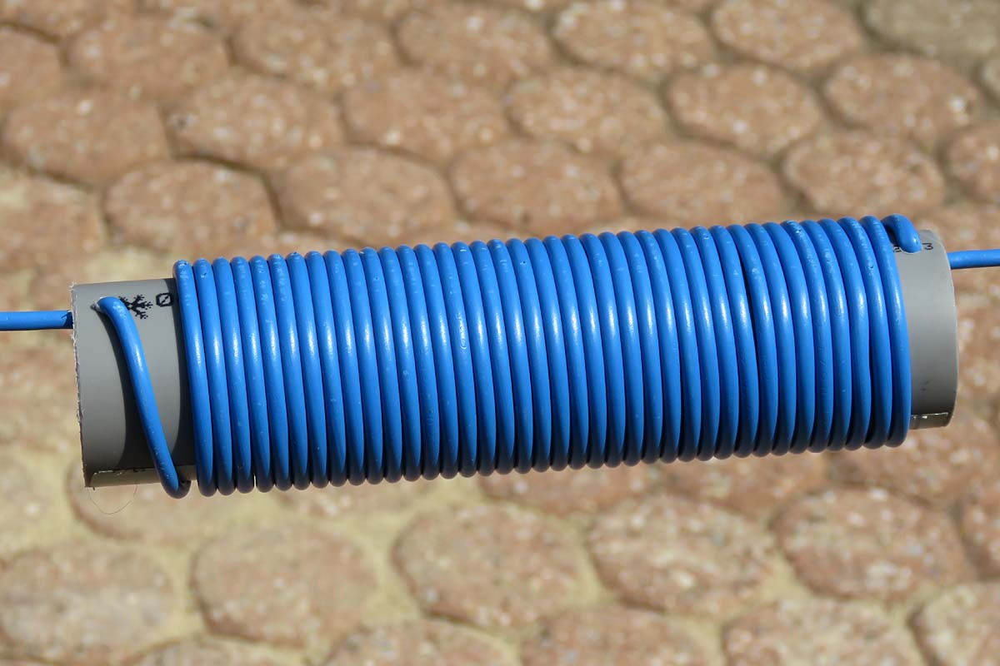
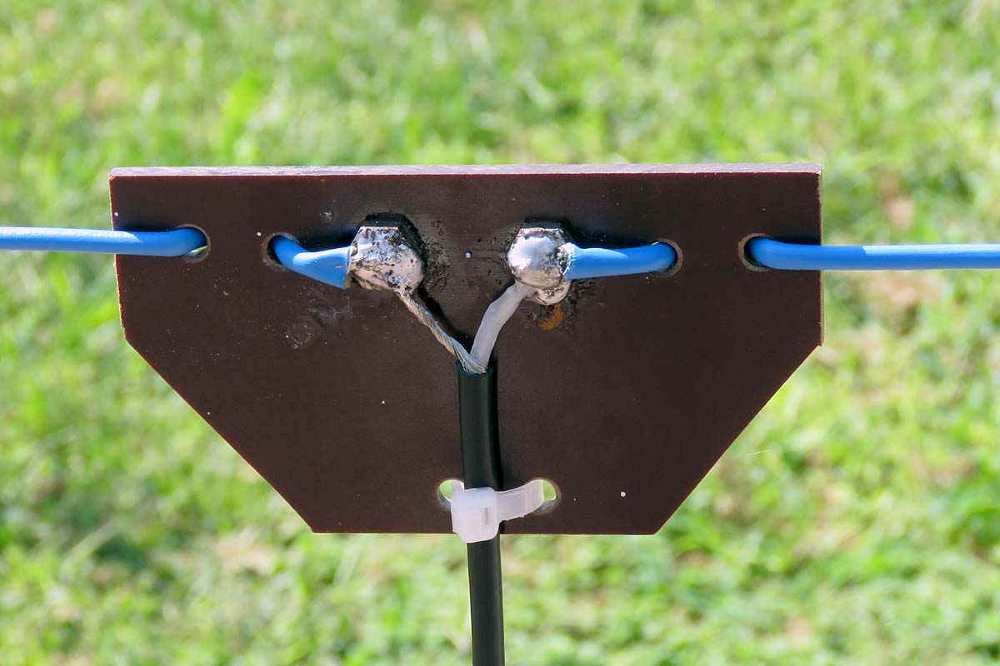
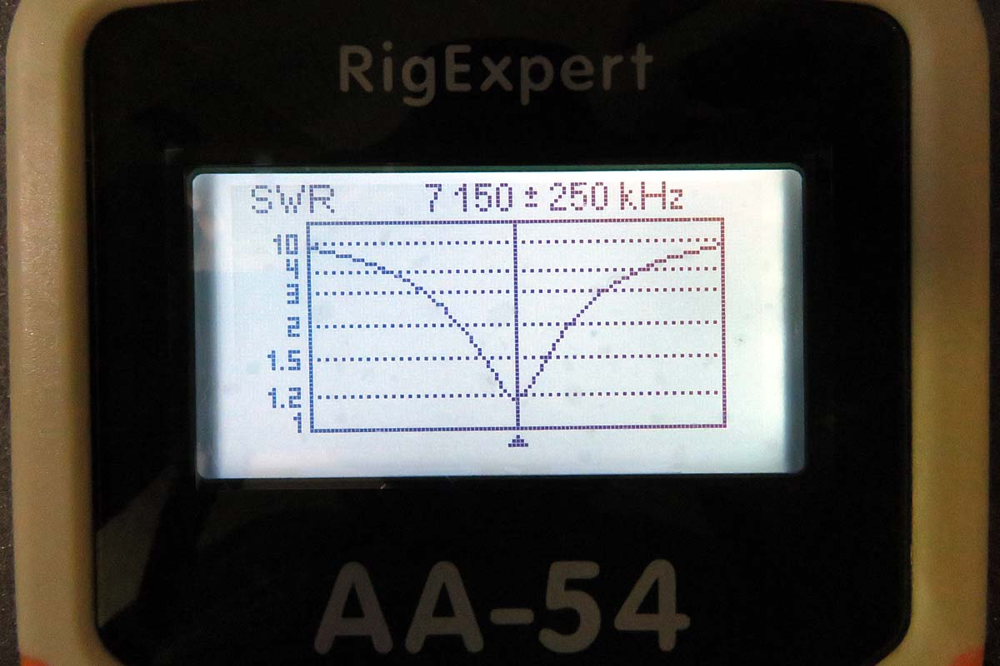
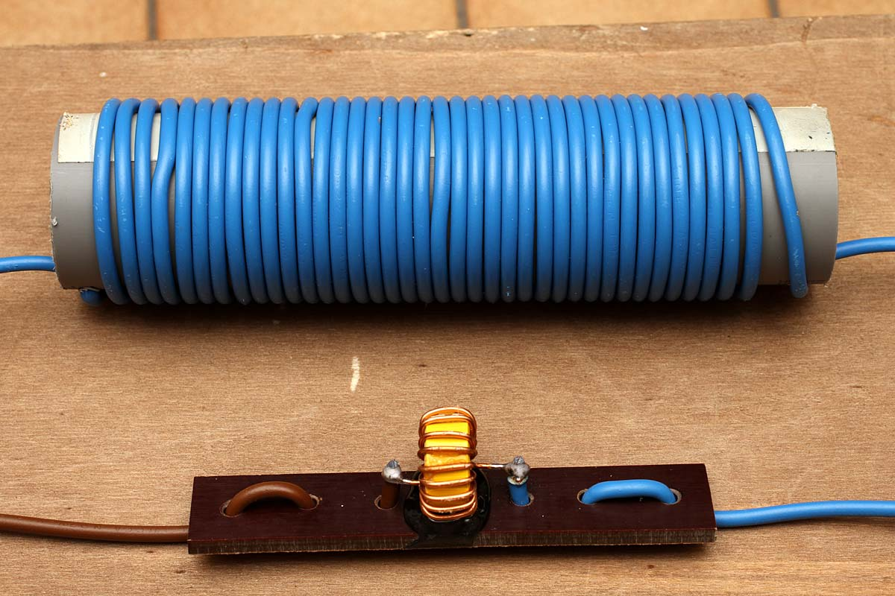

Radio & antenne
Antenna filare caricata per Banda 40mt
Indice della pagina
Agosto 2015-Gennaio 2021
Per una volta questo non è un mio progetto ma una antenna già proposta sul web dal radioamatore GM4JMU vedi: http://www.qsl.net/g3pto/shortant.html
Un Dipolo a mezza onda nel mio caso prenderebbe troppi metri quindi difficile d sistemare attorno o sopra la casa, pertanto questa soluzione rientra nelle fattibilità.
La realizzazione è fatta con cavo elettrico da 2.5mmq normale cavo per impianti elettrici qualsiasi colore, consiglio il nero in quanto meno visibile.
Bisogna realizzare le due bobine da 40 spire, gli isolatori e il Boom centrale oltre al Balun.

La lunghezza totale da isolatore/isolatore è di 10,12 metri. Per avere il migliore rendimento tutta l'antenna deve essere posizionata in alto e lontano da ostacoli. Consiglierei 4 metri come altezza minima ma 10 metri sarebbero ideali, chiaramente fuori da ostacoli.
Il ramo esterno da circa 2,30m deve essere tagliato più lungo, 2,50m in quanto può servire in fase di taratura avere una lunghezza maggiore, c'è sempre tempo ad accorciare. Inoltre la frequenza di lavoro dipende molto dalla accuratezza e dimensione delle bobine.
Realizzazione

- La Bobina di carico serve a ridurre la lunghezza dei due bracci del dipolo e va realizzata rispettando le misure e posizionata nel punto preciso.
- Utilizzare un tubo PVC per idraulica da 40mm di diametro, la lunghezza è di 18-20cm è anche in funzione del diametro del filo elettrico utilizzato, nel mio caso il diametro del cavo è di 3,9mm.
- Avvolgere 40 spire come in foto, basta fare un foro da 4,5mm inizio e fine tubo per avere il fissaggio e uscita cavi avvolti.
- La lunghezza del cavo avvolto è di circa 5mt, i due bracci più il cavo bobina corrispondono a un dipolo a mezza onda.
- Consiglio di fare una unica tirata di cavo senza saldature è tutto più sicuro e semplice e può servire per togliere e mettere spire nel caso la frequenza di lavoro non sia centrata. Predisporre di una tirata unica di 12 metro di cavo per ogni braccio del dipolo.

- Questo è il Boom centrale realizzato con una basetta di bakelite da 4mm di spessore, va bene (meglio) vetroresina o materiale plastico robusto, che resista all'acqua e sole (UV).
- Saldare i due cavi del RG59/U sulla testa di due bulloni in ottone, vanno bene da 5 o 6mm chiusi con il dado.
- In questo caso ho deciso di non fare il Balun in quanto mi manca il nucleo toroide adatto, userò comunque l'adattatore di impedenza "75 OHM matching 1/4 wave stubs" realizzato con 6,90m di cavo RG59 (lunghezza calcolata come 1/4 lunghezza di onda x 0,66 ).
Alla fine del cavo 75 ohm si collega il cavo RG213/U 50 ohm della lunghezza necessaria per arrivare al trasmettitore.
Caratteristiche

- Dopo gli opportuni accorciamenti siamo arrivati a questa situazione, centro banda 7.150 MHz e un ROS di 1.2 il tutto misurato alla fine della linea (19m) prima di entrare in radio.
- Considerando che l'accordatore automatico dello Yaesu FT450D lavora fino a un ROS (SWR) di 3 abbiamo una larghezza di banda accettabile che va da 7.0 MHz a 7.30 MHz
Per scendere ancora di frequenza bisognava avere i cavi più lunghi...per quello che consiglio di partire con 2,5m per poi tagliare fino a raggiungere il valore giusto.
- In mancanza di analizzatore bisognerà fare un po' di misure con il Rosmetro per trovare il punto di lavoro.
Miglioramenti

- Per chi vuole ridurre peso e dimensioni, è possibile sostituire la grossa bobina con un nucleo toroidale che deve presentare lo stesso valore induttivo, sicuramente cambia il "Q" che va a modificare la banda passante.
- La bobina in filo ha un valore di 48uH (7 MHz), utilizzando la tabella dei nuclei AMIDON si cerca il nucleo più opportuno per il campo di frequenze e poi si avvolgono le spire necessarie per raggiungere il valore.
- Altra variante è realizzare la stessa antenna con cavo da 4mmq, risulta avere una banda passante leggermente più larga, ma il tutto diventa più pesante....
- Molti realizzano la bobina con filo rame smaltato con un diametro di 0.8 - 1.2mm è da misurare il valore raggiunto, potrebbero non andare bene le 40 spire.
Antenna bibanda caricata 7 MHz e 27.5 MHz
- Con leggere variazioni delle lunghezze dei rami è possibile avere la filare caricata che risuona anche a 27,5 MHz oppure a 28 MHz.
- Non è più una filare orizzontale ma deve essere posizionata come "V invertita" cioè con angolo di 120° cosi da portare l'impedenza a 50 Ohm, viene quindi eliminato lo stub fatto con cavo 75Ohm, si collega il 50 Ohm direttamente sul boom centrale meglio se con cavo di buona qualità e dimensione come RG213 o anche solo RG8X
- Per centrare le frequenze sono forse da allungare i due bracci interni da 2.58m di qualche cm, come pure allungare i bracci esterni da 2.30 di 5cm
- Così fatto avremo una antenna filare in grado di trasmettere con oltre 100W applicati per entrambe le bande risonanti.
Propagazione
- In questo ultimo periodo del 2015 ci sono spesso condizioni di scarsa propagazione, dovuto alle "Macchie Solari" che potrebbero annullare i segnali ricevibili, è consigliabile consultare il sito http://www.hamqsl.com/solar.html per verificare le condizioni della propagazione per le varie bande.
Conclusioni
- Antenna facile da costruire, a costo bassissimo, che se posizionata opportunamente può dare le stesse soddisfazioni di un dipolo a mezza onda.
- Ad antenna terminata con il primo QSO ho collegato UDINE dove era in corso il contex Frecce Tricolori arrivando con un segnale di R5 S9 in pratica 450km da Torino al primo collegamento a cui seguirono altri a distanze maggiori sempre in funzione della propagazione. Niente male per un po' di cavo elettrico.....
© Roberto Chirio: all rights reserved.